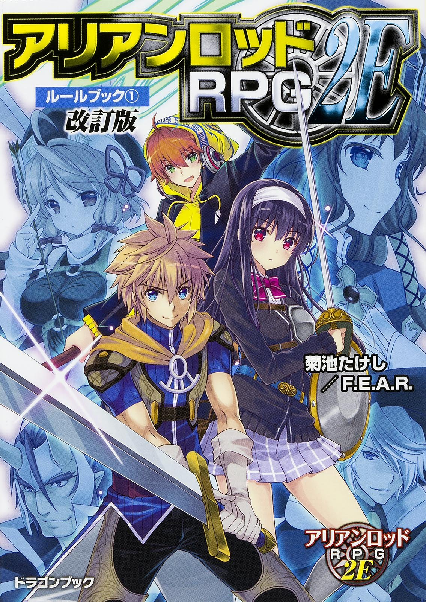

TRPGとは
テーブルトーク・ロールプレイングゲームの略。ゲーム機を使わず紙と鉛筆、サイコロを使い、
参加者と会話をしながら進行の主軸となるシナリオ（ビデオゲームで言う物語のこと）を楽しみます。
TRPGには様々な種類があり、プレイするにはそのタイトルのルールブックが必要です。
今回はルールブックを多数紹介しようと思います。
クトゥルフ神話TRPG

アメリカのゲーム会社であるChaosium社が製作したクトゥルフ神話の世界観を体験するホラーTRPGです。
このタイトルの特徴としては
・プレイヤーキャラクターであるところの「探索者」たちは、せいぜい常人より少し専門的な知識を得ている一般人に過ぎない。
・対して、脅威となりうる「神話的存在」は正面から立ち向かって打倒できるような相手ではない。
・むしろ、直視しただけで「宇宙的恐怖」から発狂してしまうようなおぞましくも強大な相手なのである。
・また他のゲームより個々のキャラクターがわりと簡単に死んでしまう。
このようにクトゥルフ神話TRPGは、矮小な人間である探索者たちが、様々な宇宙的恐怖に晒されつつも生き残ることを目的として足掻く様を楽しむホラーTRPGとなってます。
アリアンロッドRPG2E

2005年に発売された菊池たけしのオリジナルTRPG第3作『アリアンロッドRPG』のルール第二版に当たる。
『アリアンロッド』の世界はスタンダードな「中世ヨーロッパ風もしくは近世東アジア風の剣と魔法のファンタジー世界」ではある世界「エリンディル大陸」を舞台に、冒険者は地下迷宮に潜り、怪物たちを倒し、成長点を稼いでレベルアップをする―。
これまでの遊び方は踏襲しつつ“改訂版”では異世界より到来した新種族“アーシアン”を追加。これにより「アリアンロッド」は現代人がファンタジー世界に転移して活躍する“異世界トリップもの”と呼ばれる遊びと物語性を手に入れた。
さあ、新たな冒険がキミを待っている!
| ジャガイモ | 3個 |
|---|
| ニンジン | 1本 |
|---|
| 豚ブロック | 300g |
|---|
| カレー粉 | 1箱 |
|---|